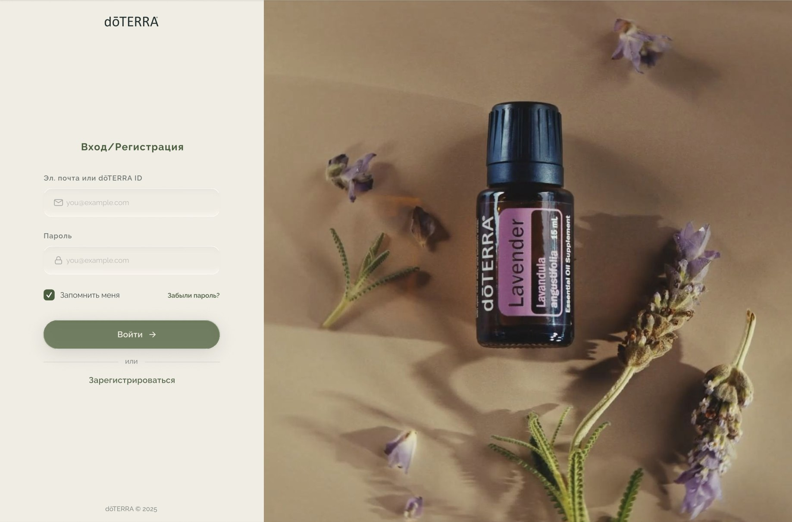
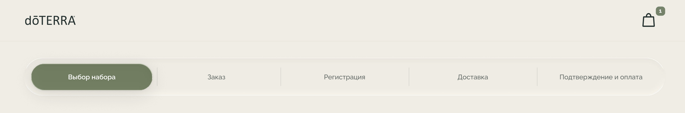
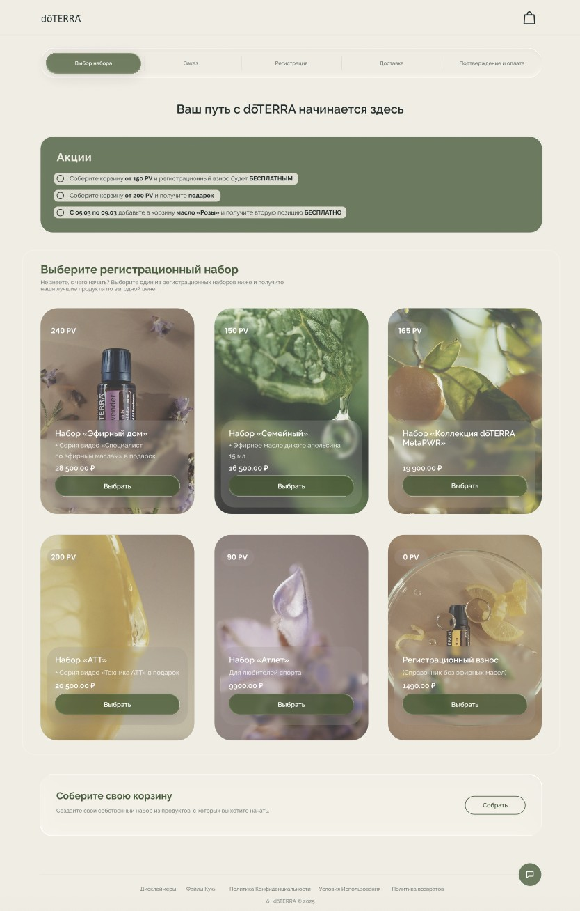
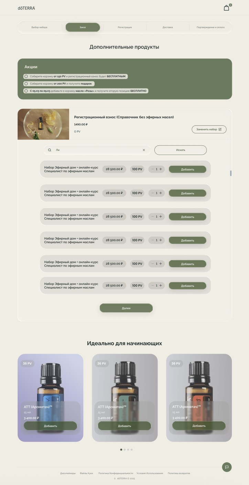
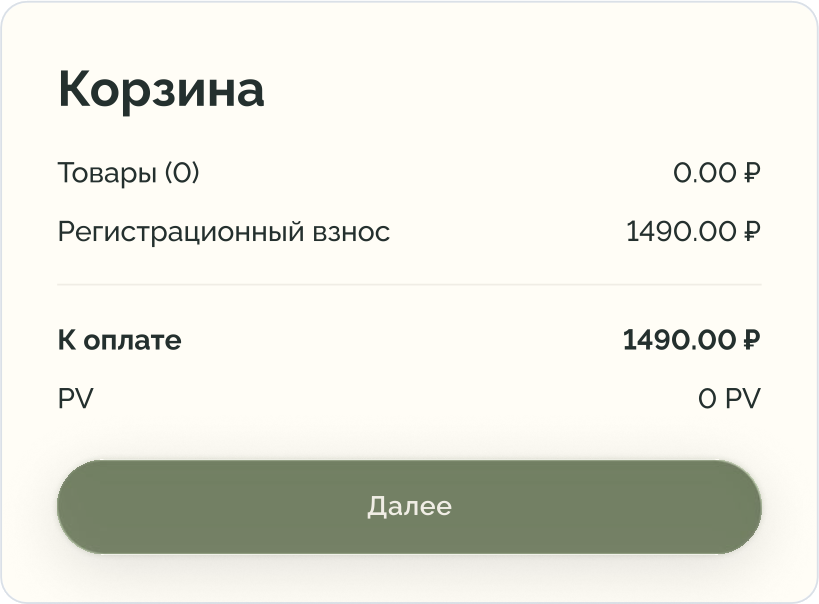
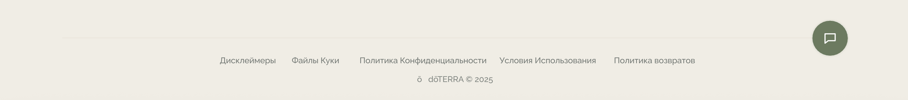

dōTERRA Russia Platform Redesign
A case study of a full redesign of dōTERRA’s Russian web platform, using the structure members already knew
I’m a part-time product designer on the project of redesigning dōTERRA’s Russian web platform. Stakeholders came to us asking for better UX. Users kept telling us the site was hard to use and looked old. Over the past year I’ve redesigned over 80% of dōTERRA’s platform in Figma, using a new design system built from dōTERRA’s latest brand guidelines, and handed the work to the engineering team one milestone at a time. This case study covers Enrollment, the onboarding flow new members go through to join. I’ve also redesigned the personal account and the shop, but they’re still in production, so I can’t show them yet.
- Product
- dōTERRA Russia web platform
- My role
- Product Designer
- Timeline
- May 2025 – Present
- Skills
- User research, Product design, Design systems, Prototyping, Developer handoff
- Team
- Product manager, content manager, marketing director, operations manager, and me. The PM and I hand off each finished milestone to the engineering team.
Problem: Everything worked (technically). But user experience was poor, and UI was outdated
On paper, the Russian site did its job. You could find a product, sign up, place an order. But every one of those tasks took way more effort than it should have, and the whole platform looked years behind dōTERRA’s other markets. Help? Two small links at the top of the page: a returns policy and a PDF about the loyalty program.
The original ask was UX only. Once we started pulling the site apart with the team, it was obvious the old UI had to go too.
Research
I ran more than 20 structured interviews with regional stakeholders and customers, audited the old site page by page, and put it side by side with dōTERRA’s global platform. The same complaints kept coming back.
- Signing up and onboarding was painfulToo many steps, confusing forms, and no idea how far along you were.
- It looked outdatedMembers called the site old. Next to the online stores they use every day it felt behind, and that’s a bad look for a premium wellness brand.
- Friction everywhereDense layouts, non-functional buttons and key information locked in PDFs, across the entire platform.
“Signing up feels more like filling out paperwork, and the site looks like it hasn’t changed since the 2000s.”
Solution: Overall structure stays the same; UI fully updated; UX upgraded according to research
Russian members shop differently. They look for supplements by what they do (digestion, metabolism, relaxation, detox), not by brand line, and advocates open the business tools every single day. So the structure stayed: labels, categories, where the tools live, every line of localized copy. Everything on the surface changed.
The deep green and cream palette comes from dōTERRA’s freshly released brand guidelines (we were first to use them for a redesign). The glassmorphism on top was my call. Frosted headers, cards, modals and dashboard panels make a dense platform feel a lot lighter than it is.
- Sign-up in five short steps
- An order summary that does not clutter the screen
- Familiar categories, cleaner menus
- A clear understanding of what to do next
First impression: the login screen

People told us the site looked old, and the login page is the first thing they see. So I made everything simple. The left third of the page is the CTA: email or dōTERRA ID, password, remember me, forgot password, one green button. Registering is a quiet text link under a divider. Returning members don’t trip over it, and new people still find it.
The right two thirds is a looped video that shows what dōTERRA is about. This frame shows a full-bleed photo of a dōTERRA Lavender bottle among lavender sprigs, in warm tones that sit well next to the cream form panel. No text and no form fields compete with it, so the product does the talking.
A progress bar with words instead of numbers

The five steps live in one pill-shaped bar at the top: Choose a kit, Order, Registration, Delivery, Confirmation and payment. The current step is solid green. Everything else stays quiet. I used names instead of “Step 2 of 5” on purpose, because people wanted to know what was coming, not just how much was left.
Step 1, choose a kit: cards instead of table rows

Picking a kit is the biggest decision in sign-up, and the most expensive one (9,900 to 28,500 ₽). The old flow showed kits as lines in a list. I designed both a compact list and a card grid. In the card version each kit gets its own photo, which finally makes it look like a product instead of a database entry.
The card anatomy stays the same everywhere. PV badge in the top-left corner, because sponsors and advocates think in PV. A frosted glass panel at the bottom with the kit name, what’s included as a gift, the price and a full-width “Choose” button. The glass keeps white text readable on any photo without covering the whole image.
Not everyone wants a kit, so there are two exits. A registration-only option (1,490 ₽, 0 PV) sits in the same grid, and a “Build your own cart" block under it is for people who already know what they want.
Promotions as goals
On the old site, promos were text you had to go looking for. Now a green “Promotions” panel sits right at the top of the first two steps, and each offer reads like a target: build a basket from 150 PV and the registration fee is free, from 200 PV and you get a gift, add rose oil during the promo dates and the second one is free. It’s the most saturated block on the page, so it gets read first. And because it repeats on the Order step, the goal stays in front of you while you add products.
Step 2, order: adding products without going back

On the Order step, the kit you picked stays pinned at the top with a “Replace kit” button. Changed your mind? You swap it right there, no back button. Under it: a search field, then product rows where price and PV sit in matching pills, a quantity stepper and an Add button. Same order on every row, so your eye learns it once.
Below the main list there’s a “Perfect for beginners” carousel with starter oils, built from the same card as the kits. It’s an upsell, yes. But it comes after the list, so it never blocks the main task.
A cart that stays out of the way

The cart summary (items, registration fee, total to pay, PV, Next) opens from the cart icon instead of living in a permanent sidebar. The page is for choosing, so choosing gets the full width. Totals are always one move away, never in the way.
Help is now a persistent live-chat feature

The old help was a FAQ link at the top of the page that appeared only after a user finished the onboarding process. Now a round green chat button sits in the bottom-right corner of every step, the spot people already check on other online stores.
Color, shape and glass
Cream background, sage green for anything you can press, both straight from the new brand guidelines. With only one action color, buttons are obvious without labels shouting. Buttons, the progress bar and the price chips are all pills, which keeps the look soft and consistent with dōTERRA’s natural, plant-based brand.
The glass is not decoration. It only shows up where content sits on top of something: text over photos on the kit cards, and panels that float above the page.
One system behind every page
I’m building the design system as I go. Colors, fonts and spacing live in Figma variables. Buttons, forms, cards, the progress stepper and the order summary are components with variants, and layouts run on auto layout so they hold up at any screen size. Engineers get the same building blocks every milestone, which keeps handoff clean.
Impact: Redesigned, handed off, customers are happy (are they?)
Enrollment (onboarding) is the first part of the platform to be finished and approved, which is why it’s the one shown here. The personal account and the shop are redesigned too, but they’re still in production. The new platform isn’t fully live yet, so I don’t have conversion numbers for you. What I do have: almost every page redesigned, a working design system, and milestone handoffs with annotated specs, interaction states and responsive layouts. I set the design direction and defend it in recurring reviews with the business team and engineering.